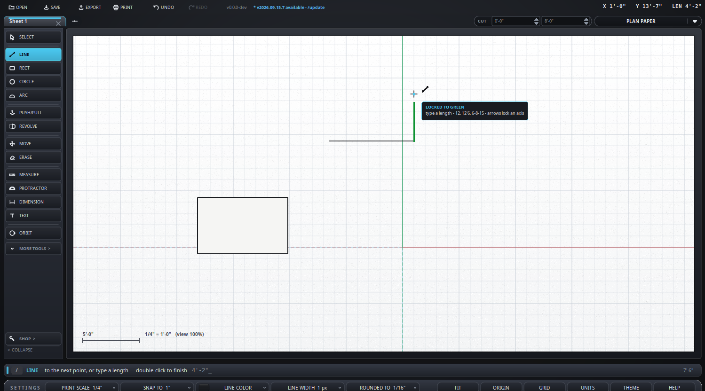

Draw a line, or a chain of them.
Keyboard: L
While a line is under way the cursor offers directions to follow: the three axes, an axis from the point you started at, and - in magenta - parallel or square to the last edge, which is the edge the line was started on or the piece just drawn. The band takes the colour of whatever it is offering, and the card beside the cursor names it.
Alt steps through what it may offer, the way SketchUp's line tool does:
| Press | What you get |
|---|---|
| (none) | All of them - axes, and parallel and square |
| Alt | The directions off. Corners, midpoints and crossings still snap |
| Alt again | Parallel and square only - no axis pulling you off them |
| Alt again | All of them again |
It starts fresh every time a line does. Before the first click, Alt is the working plane instead - see planes.
Draw a line along one that is already there and nothing new is added - but it says the areas that edge bounds are wanted, and any face that was rubbed out there comes back. That is SketchUp's healing, and it is the way back to a face you deleted on purpose and then wanted after all.
A line drawn across edges already there cuts them where it crosses, and they cut it, so every piece is a separate edge that can be selected or rubbed out on its own. A line drawn along one already there is cut where the two share, rather than left lying on top of it.
